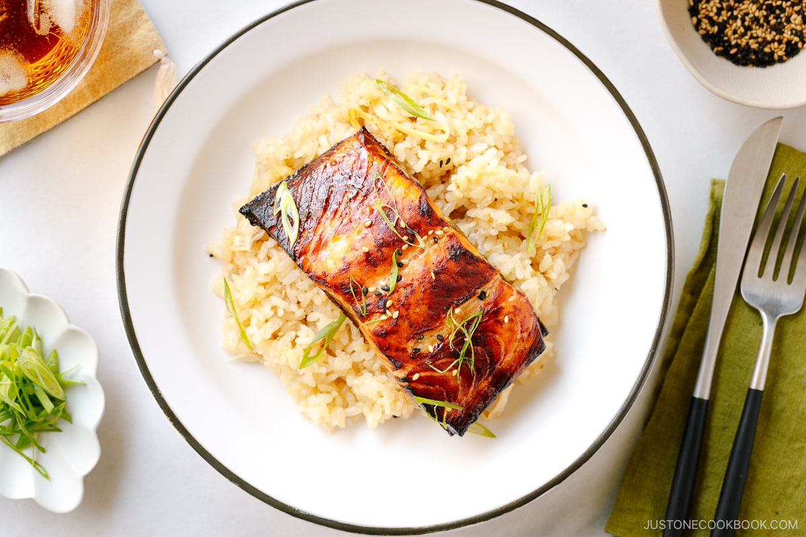

Miso Salmon

Description
This Miso Salmon is marinated in a sweet and savory miso sauce and broiled until the outside is beautifully crisp and the inside is perfectly moist. It’s even better when you serve the fish with Japanese ginger rice. You‘ll make it a staple in no time.
Ingredients
- 2 skin-on salmon fillets (¾ lb, 340 g; ideally, less than 1 inch or 2.5 cm thick; 4–6 oz or 113–170 g per fillet)
- 2 Tbsp miso (use any type of miso; I used Hikari Miso Organic White Miso)
- 1 Tbsp sake
- 1 Tbsp mirin
- 1 Tbsp soy sauce
- ¼ tsp toasted sesame oil
- ½ tsp toasted white and black sesame seeds
- 1 green onion/scallion (chopped)
Recipe
- Before You Start: Please note that this recipe requires a marination time of 1–2 hours.
- Gather all the ingredients. Check your 2 skin-on salmon fillets for scales and tiny bones. For bones, run your fingers along the flesh surface and sides to feel for the hard tips of any bones and pull them out with fish boning tweezers. For scales, run your fingers back and forth across the skin to find any scales and scrape them off with the flat edge of a knife.
- In a large bowl or flat tray, mix the marinade ingredients: 2 Tbsp miso, 1 Tbsp sake, 1 Tbsp mirin, 1 Tbsp soy sauce, and ¼ tsp toasted sesame oil.
- If your salmon is not cut into fillets yet, cut it into individual portions so that they cook faster and evenly. The typical American serving size is 6 oz (170 g). Then, place the salmon in the bowl with the marinade, skin side up.
- Spoon the marinade on top of the salmon, making sure to coat the sides and skin. Cover and keep it in the refrigerator for 1–2 hours for fillets up to 1 inch (2.5 cm) at the thickest part. Marinate for 3 hours for a thicker cut. Tip: This fish is marinated for a short time, unlike Black Cod with Miso. I don’t recommend marinating the salmon overnight, as it will get quite salty.
- Preheat the oven to 425°F (218ºC) with a rack placed in the center position. For a convection oven, reduce the cooking temperature by 25ºF (15ºC). Next, take the marinated salmon out of the refrigerator and remove any excess marinade completely from the fish; otherwise, the miso may burn during baking. You can scrape off the marinade with an offset spatula or butter knife if you‘d like
- Place the salmon pieces skin side down on a baking sheet lined with parchment paper. If you‘re using an oven probe, insert it into the thickest part of the flesh. Tip: If you don‘t have a probe, I highly recommend getting a Thermapen instant-read thermometer.
- Transfer the baking sheet to the oven and attach the probe (if using) to the oven. Bake the salmon until the thickest part of the fillet registers an internal temperature of 125–130°F* (52–54ºC), for roughly 18–20 minutes. You do not need to flip the salmon during baking. If you prefer medium rare, you can stop cooking at 120ºF (49ºC). Tip: My recommended baking time is 5 minutes per ½-inch (1.3-cm) thickness of salmon measured at the thickest part.
- Take it out from the oven. Test if the salmon is cooking by flaking the flesh. If it flakes easily, it’s cooked through. To char (optional): You can broil the salmon to give it a nice char, if desired. When the salmon is getting close to the desired internal temperature, remove the probe from the salmon and oven. Then, change the oven setting to Broil on High (550ºF/288ºC). Keep the oven rack placed in the center position, 9 inches (23 cm) away from the top heating element. Then, broil the salmon for 3 minutes or until the surface is blistered and browned a bit. Note that the salmon will continue to cook while broiling; therefore, don't wait too long to switch to broil.
- Serve the Miso Salmon and top with ½ tsp toasted white and black sesame seeds and 1 green onion/scallion thinly sliced (both toppings are optional). I like to serve this salmon with Ginger Rice. Enjoy!